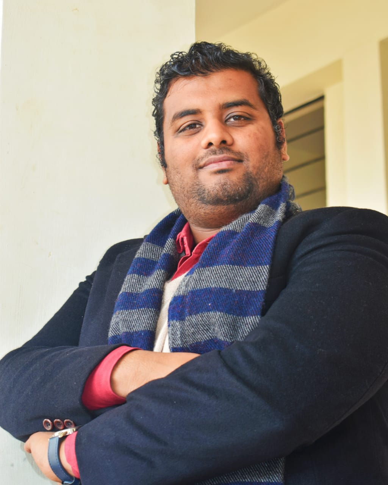
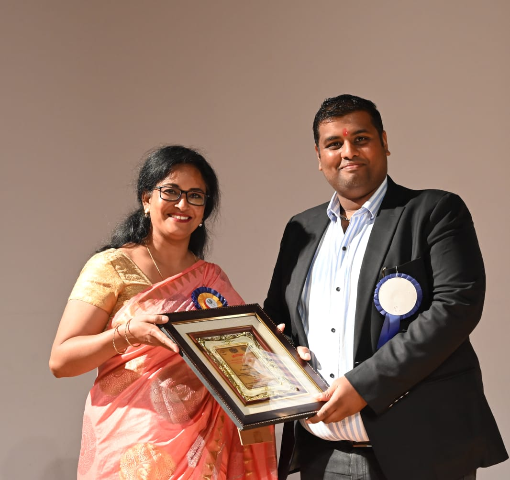
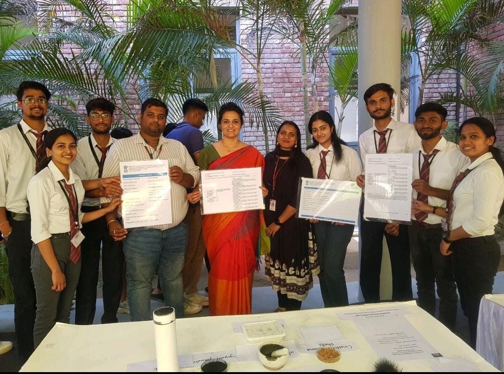
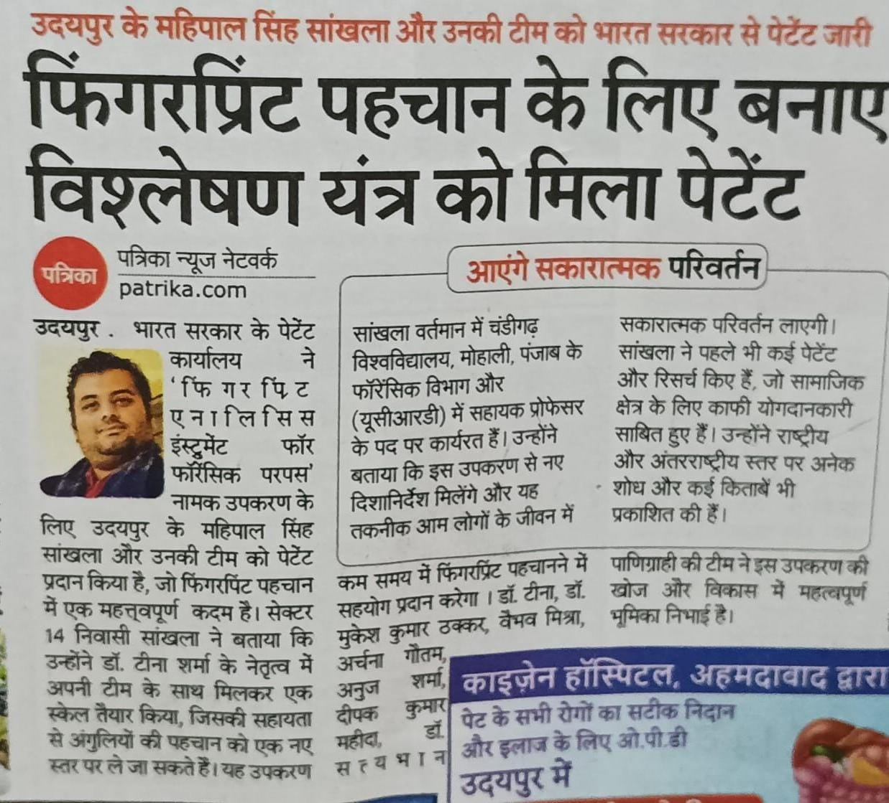
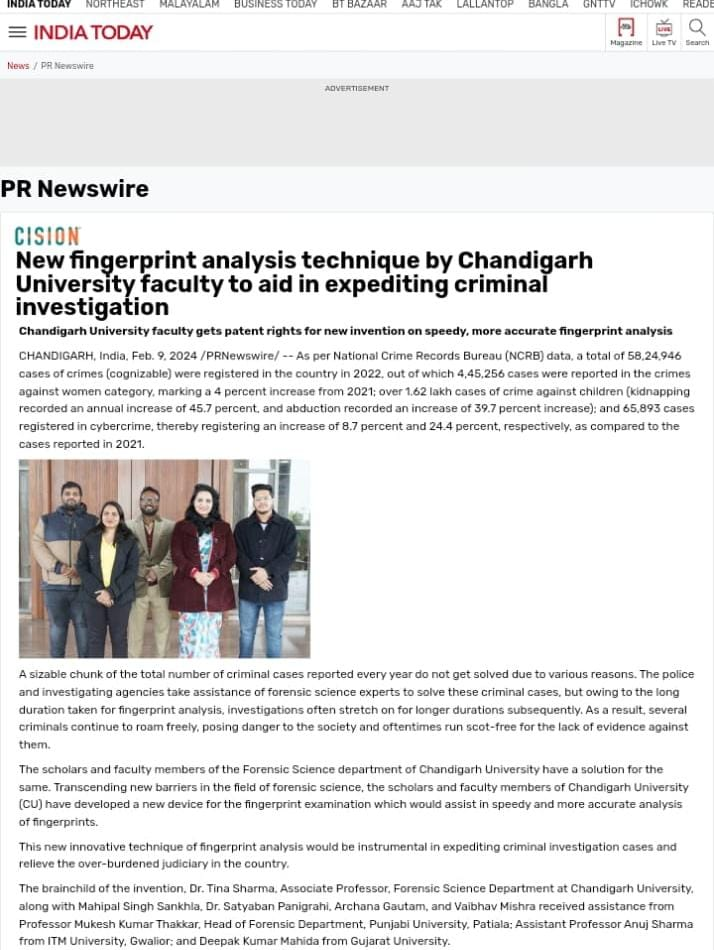
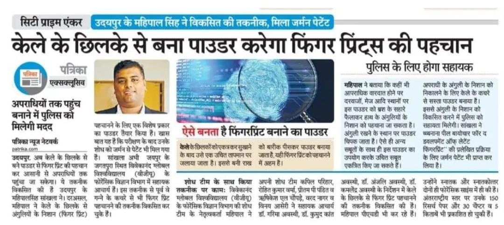
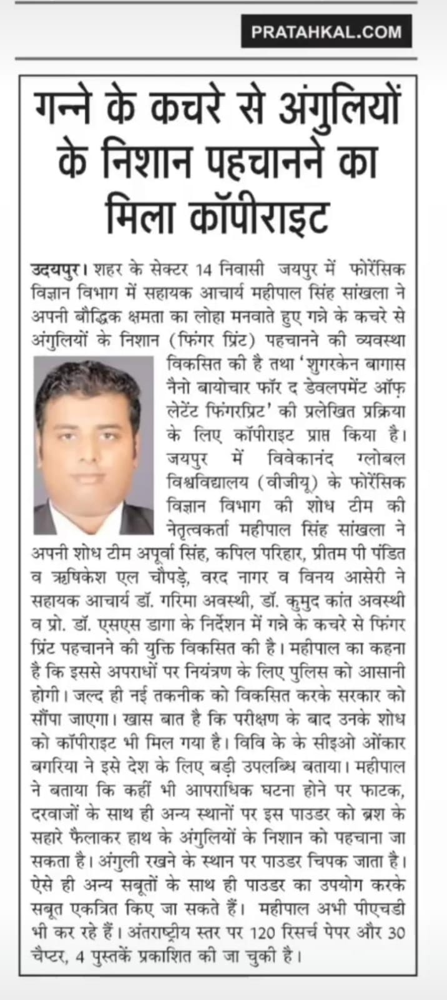
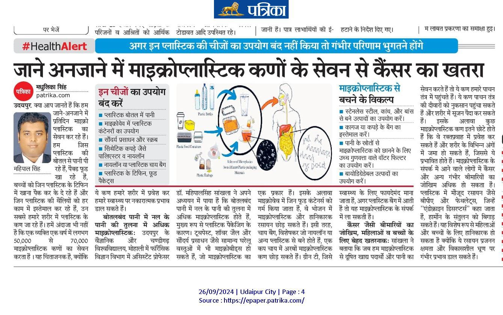
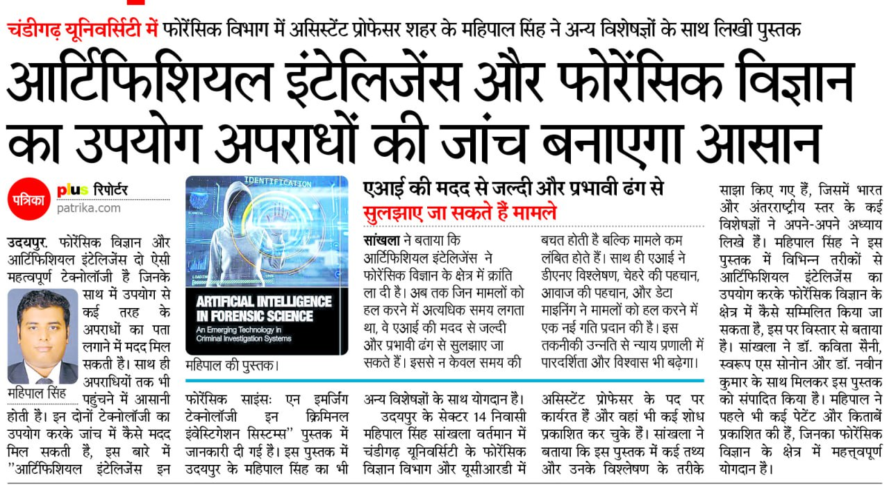

Article Published on Website / Newspaper
- Mahipal Singh Sankhla, “Microplastics Everywhere: A Growing Threat to Human
Health” , view here
- Anubhav Singh & Mahipal Singh Sankhla, “Rumour’s On Corona: Are You Doing It
Right!”, view here
- Mahipal Singh Sankhla, Shriyash Mohril, Lokesh Vaishanav, “World
Crisis:
Increasing Depression During Work from Home in Covid-19 Pandemic” view here
- Mahipal Singh Sankhla, “Medico-Legal Postmortem/Autopsy in India: Purpose &
Benefit”, view here
Editorial Board Member
- Guest Editor of Special Issue of Role of Nanoparticle Use in Forensics and
Fingerprint Identification,
Current Materials Science, (Bentham Science)
- Guest Editor of Special Issue of Advanced Nanotechnology in Forensic Science:
Revolutionizing Fingerprint
Identification and Crime Scene Analysis, Current Nanoscience, (Bentham
Science)
- Guest Editor of Special Issue of Environmental Forensics: Linking Crime to
Environmental Science,
Current Forensic Science, (Bentham Science)
- Guest Editor of Special Issue of Nanotechnology for Safer and More Effective
Environmental Remediation,
Current Materials Science, (Bentham Science)
- Guest Editor of Special Issue of Nanotechnology: Enhancing Efficiency and
Safety
in Environmental Pollution
Remediation, Current Nanoscience, (Bentham Science)
- Guest Editor of International Journal of Materials Today Proceedings for
National Conference on
Environmental Toxicology: Impact on Human Health (Elsevier), 2022.
- Guest Editor of Environmental Science and Pollution Research for National
Conference on
Environmental Toxicology: Impact on Human Health (Springer), 2022.
Fellowship Member
- Fellow Member of India School of Internet Governance (Insig2022) at Hyderabad
Chapter.
Awards & Honor’s
- “Forensic Research Excellence Award”, in NFCI Summit and Award 2023, Dept. of
Forensic Science & CI, Legal Desire & Insights & Dept. of Forensic Science, Vivekananda
Global University at "21 January 2023.”
- “Forensic Research Excellence Award”, in NFCI Summit and Award 2023, Dept. of
Forensic Science & CI, Legal Desire & Insights & Dept. of Forensic Science, Vivekananda
Global University at "21 January 2023.”
- “Best Young Researcher Award” in IFCA Award & Summit 2021, Department of Forensic
Science & CI, Legal Desire & Media Insights at "7 August 2021.”
- “Young Scientists Award” for Best Paper Presentation in 2nd National Conference
on
Forensic Science and Criminalistics, Forensis Agora 2017.
- Awarded “Junior Research Fellowship-JRF”, DST-Funded Project in Department of
Chemical Engineering at “Malaviya National Institute of Technology- MNIT”,
Jaipur.
- Awarded “Scholarship 300$ Online Certificate Course” by True Forensic Science,
USA.
- Awarded “Excellence in Reviewing” in International Journal for Innovative
Research in
Science & Technology (IJIRST).
- Awarded “Excellence in Reviewing” in Asian Journal of Advance Research & Reports.
- Awarded “Certification of Appreciation” for Hard Working in Legal Desire Media &
Publication.
Organized Conference / Seminar / Workshop / Webinar / FDP
- Coordinator of Online Workshop on “Intellectual Property Awareness” program under
the
mission of
National Intellectual Property Awareness Mission (NIPAM), Intellectual Property
Office,
Govt. of India,
held on 05 September 2023.
- Coordinator of Online Workshop on “Intellectual Property Awareness” program under
the
mission of
National Intellectual Property Awareness Mission (NIPAM), Intellectual Property
Office,
Govt. of India,
held on 02 May 2023.
- Organizing Secretary of “National Forensic Science Summit and Award 2023”, held
on 21
January 2023.
- Organizing Secretary of “2nd International Conference on Recent and Development in
Forensic Science,
Forensic Gyan 2021”, held on 10-11 October 2022.
- Joint Organizing Secretary of “National Conference on Environmental Toxicology Impact
on
Human Health”,
held on 25-26 November 2021.
- Organizing Secretary of “International Conference on Recent and Development in
Forensic
Science, Forensic Gyan 2021”,
held on 21-22 October 2021.
- Co-convener of “International Conference on Research and Development in Forensic
Science
and Cyber Forensics”,
held on 21-22 May 2021.
- Co-convener of “5 Days Faculty Development Programme on Pedagogy, Learning and
Effective
Use of Forensic Science in Criminal Investigation”,
held on 22-26 March 2021.
- Convener of “International Conference on Wildlife Forensic, Its Laws &
Conservation”,
held on 28-29 July 2020.
- Active Member of Organizing Committee in “5 Days Faculty Development Programme (FDP)
on
Teaching Beyond Boundaries: Emerging Trends in Forensic Education”,
held on 16-20 June 2020.
- Active Member of Organizing Committee in “International Forensic Science & Criminal
Investigation Summit & Awards (IFCI2020)”,
held on 28-29 May 2020.
- Active Member of Organizing Committee in How to Live with Covid-19, held on 24
May
2020.
- Active Member of Organizing Committee in Forensic Accounting: Emerging Trends in
Forensic
Science,
held on 5 June 2020.
- Active Member of Organizing Committee in “Webinar on Basic Structure of Indian
Constitution: Interesting & Rare Facts About Kesavananda Bharti V. State of
Kerala”,
held on 17 May 2020.
- Active Member of Organizing Committee in “2nd International Virtual Conference on
Forensic Investigations: Stepping Stone for The Future Technologies &
Advancements”,
held on 15 May 2020.
- Active Member of Organizing Committee in “Digital & Mobile Forensic”, held on 12
May
2020.
- Active Member of Organizing Committee in “Webinar on Questioned Document
Examination”, held on 13 May 2020.
- Active Member of Organizing Committee in “Legal Desire Virtual Summit 2020”, held
on
2-3 May 2020.
- Active Member of Organizing Committee in “Webinar on Stress & Time Management for
Lawyers
& Law Students”,
held on 26 April 2020.
- Active Member of Organizing Committee in National Webinar on Cybersecurity Laws and
Regulation: Discussing Road Map for India,
held on 26 April 2020.
- Active Member of Organizing Committee in “International Virtual Conference on Role of
Forensics in Criminal Investigation”,
held on 20 April 2020.
- Active Member of Organizing Committee in “International Webinar on Role of Forensic
Science in 21st Century”,
held on 10 April 2020.
- Active Member of Organizing Committee in “Toxic Detective - Masterclass on
Toxicology,
Hands-On Training and Simulation Workshop”,
held on 4 February 2020.
- Active Member of Organizing Committee in 4th National Conference on Forensic Science
&
Cyber Threats: Countermeasure, Forensis Agora, 2019.
- Active Member of Organizing Committee in 2nd International Conference on Medico-Legal
Issues & Use of Forensic in Criminal Investigation, 2019.
- Active Member of Organizing Committee in “National One Day Workshop on Crime Scene
Investigation”, 2018.
- Active Member of Organizing Committee in “International Conference on Medico-Legal
Issues
& Use of Forensic in Criminal Justice System: Challenges & Way Forward”, 2018.
- Active Member of Organizing Committee in 3rd National Conference on Forensic Science
and
Criminalistics, Forensis Agora, 2018.
- Active Member of Organizing Committee in 2nd National Conference on Emerging Trends
in
Applied Sciences.
- Active Member of Organizing Committee in National Legal Desire Summit & Award,
2018.
- Active Member of Organizing Committee in Global Enviro Care Summit, By Unmukt
Bharat,
2016.